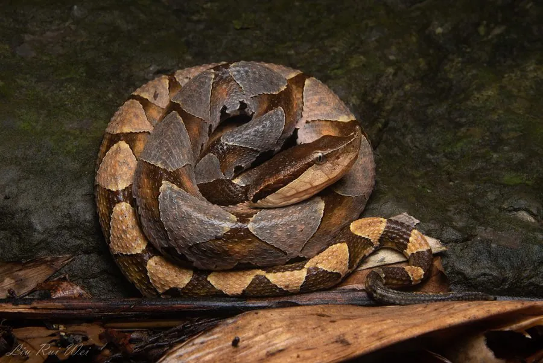

爬行动物 · 动物界
尖吻蝮 Deinagkistrodon acutus

中国南方山区的剧毒蛇，吻端尖而上翘，头部三角形，民间称“五步蛇”，被咬后须立即就医，属国家二级保护动物。
- 分类
- 门脊索动物门纲爬行纲目有鳞目科蝰科属尖吻蝮属
- 栖息环境
- 丘陵山地林缘、溪边、草丛与农田附近
- 地理分布
- 中国南方多省区及越南北部的山区
- 保护级别
- IUCN 无危（LC）；中国国家二级保护动物
物种志
尖吻蝮体长 1.2–2 米，雌性通常大于雄性，头部大而呈三角形，吻端尖且向上翘起，颊部有颊窝，能感知温血猎物的热量；体色以棕褐、灰褐为底，背部有 10 多个巨大的三角形或菱形暗斑，斑纹边缘镶黑，腹面白色。
它分布于中国南方以及越南北部的山区，栖息于丘陵、山地林缘、溪边和草丛，多在夜间活动，捕食鼠类、蛙类、鸟类和蜥蜴，行动较缓慢但攻击迅速。每年 5–7 月繁殖，雌蛇产卵 10–20 枚，孵化期约 50–60 天，母蛇有时会守在卵旁。尖吻蝮毒性较强，毒液主要破坏血液和组织，被咬后伤口剧痛、肿胀并可能出血不止，须尽快就医；它已被列为国家二级保护动物，禁止非法捕捉和买卖。
形态与习性
- 食性鼠类、蛙类、鸟类和蜥蜴
- 体长1.2–2 m，雌性较大
- 体重约 1–2.5 kg
- 寿命约 15–20 年
- 繁殖卵生，每窝 10–20 枚，孵化 50–60 天
- 活动节律夜行性，白天多盘伏休息
- 毒性出血毒素为主，被咬须立即就医
趣味知识
- 尖吻蝮的吻端尖而上翘，头部呈三角形，是它最明显的识别特征。
- 民间称它“五步蛇”，形容其毒性猛烈，其实及时就医才是关键。
- 它的颊窝能感知温血猎物的热量，使夜间捕猎更加精准。